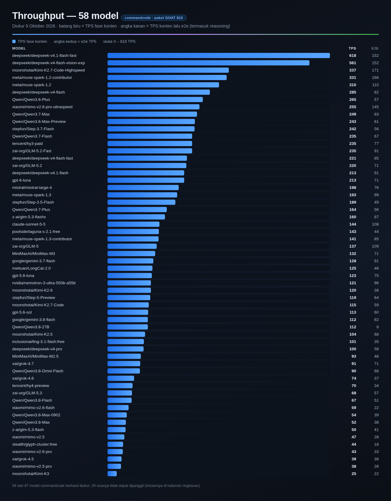
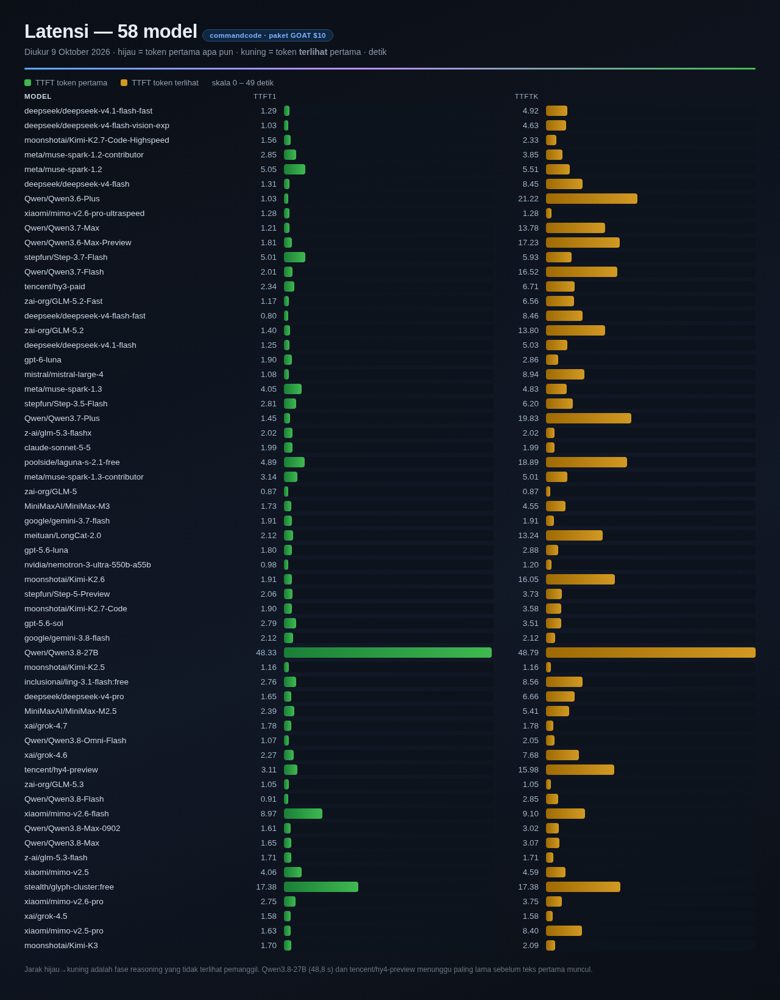
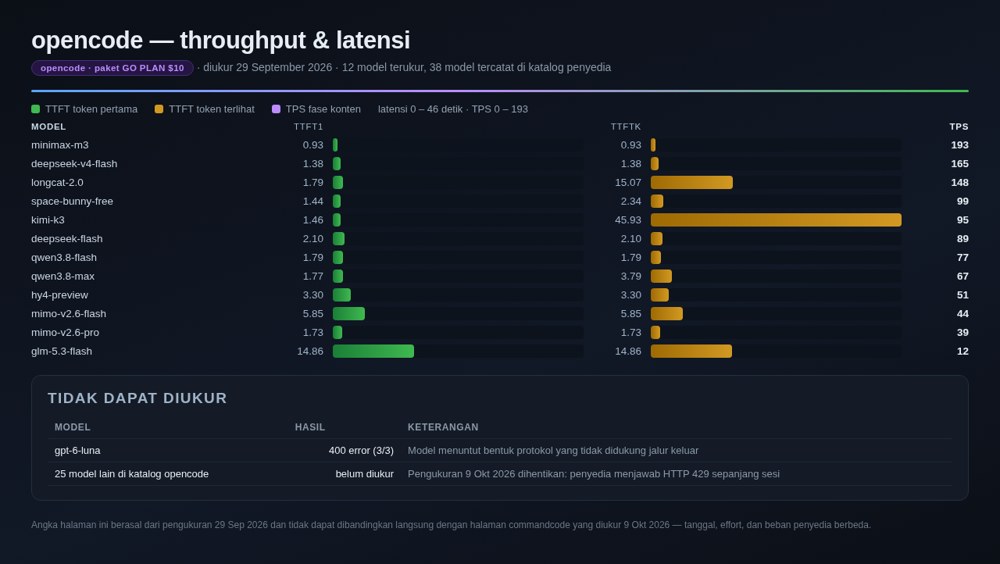

← Beranda / benchmarks
Benchmark Model LLM per Penyedia
commandcode · paket GOAT $10 opencode · paket GO PLAN $10
125
model diuji dari dua penyedia
87 commandcode + 38 opencode
87 commandcode + 38 opencode
70
rute berhasil diukur
58 commandcode + 12 opencode
58 commandcode + 12 opencode
618
TPS tertinggi
deepseek-v4.1-flash-fast
deepseek-v4.1-flash-fast
30
rute tidak dapat diukur
29 commandcode + 1 opencode
29 commandcode + 1 opencode
1. Ringkasan & ketersediaan
Sebaran status 87 rute commandcode dan 38 model opencode, delapan rute tercepat dari masing-masing penyedia, serta metode pengukuran.

2. Throughput commandcode
58 model commandcode: TPS fase konten dan e2e TPS (termasuk fase reasoning), median 3 run, 9 Oktober 2026.


3. Latensi commandcode
Dua tahap latensi tiap model: token pertama apa pun (reasoning mulai) dibanding token terlihat pertama, yaitu yang ditunggu pemanggil.


4. Throughput & latensi opencode
12 model opencode yang terukur, beserta daftar rute yang tidak dapat diukur. Pengukuran 29 September 2026.


Metode singkat
- Streaming saja; setiap rute dijalankan 3 kali, angka yang dilaporkan adalah median.
- Dua latensi diukur terpisah: token pertama apa pun (reasoning mulai) dan token terlihat pertama — yang kedua itulah yang ditunggu pemanggil.
- TPS fase konten = token keluaran dibagi durasi fase konten; e2e TPS memasukkan fase reasoning.
max_tokens 2000; effort terendah yang diterima tiap rute (lowuntuk commandcode,none/lowuntuk opencode).- 29 rute commandcode tidak dapat dipanggil: 18 menuntut paket lebih tinggi, 10 ditolak sisi protokol/routing, 1 slug usang.
- Pengukuran commandcode dilakukan 9 Oktober 2026, opencode 29 September 2026. Keduanya tidak dapat dibandingkan langsung karena tanggal, effort, dan beban penyedia berbeda.